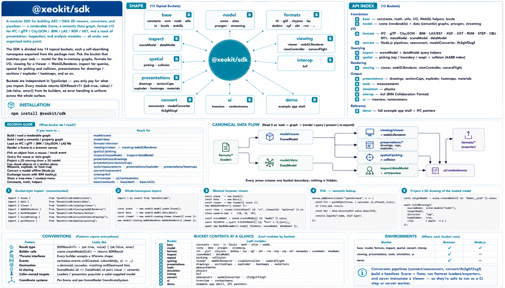
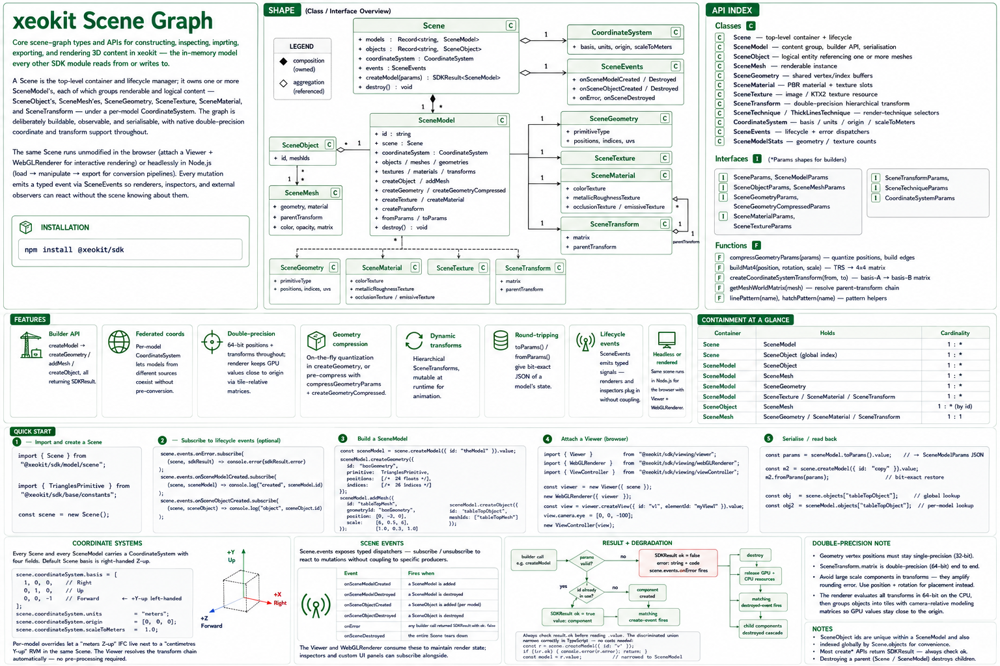
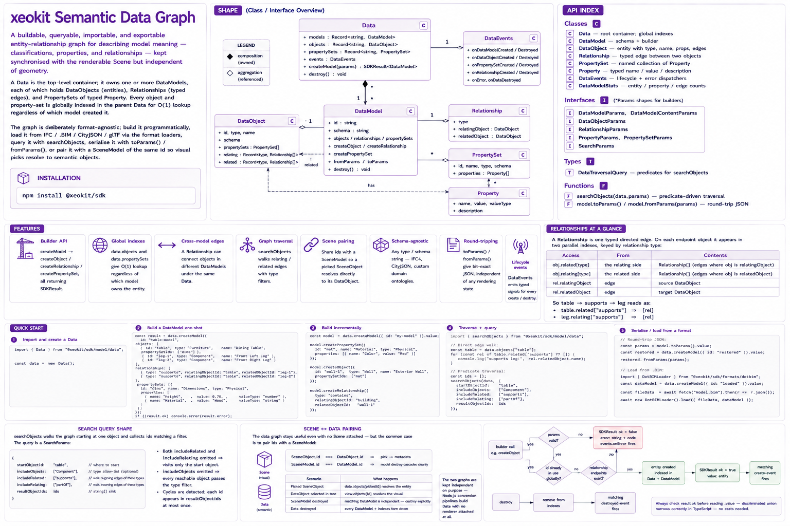

High‑performance AECO visualization for the web and Node.js
Welcome to xeokit, a flexible, production‑grade SDK for creating fast, interactive visualizations of AECO (Architecture, Engineering, Construction & Operations) models directly in the browser or in Node.js.
Built with TypeScript, xeokit is designed for extreme performance: it streams, loads, and renders very large models with minimal memory and CPU usage. The SDK cleanly separates data, scene representation, and rendering, making it suitable for everything from lightweight viewers to complex BIM pipelines.
The SDK is organised into topical buckets rather than a flat namespace. Every import path begins with one of the buckets below; the table inside each bucket lists the concrete submodules. The same buckets are exposed at runtime as namespaces on the root xeokit object (e.g. xeokit.model.scene, xeokit.viewing.viewer).
See the Cheatsheets section below for visual overviews.
Foundational primitives every other bucket depends on: result types, math, constants, locale strings, and file I/O helpers.
| Module | Description |
|---|---|
@xeokit/sdk/base/core |
SDKResult, SDKErrorType, SDKTask, event emitter. |
@xeokit/sdk/base/constants |
Shared enums (primitive types, render modes, …). |
@xeokit/sdk/base/math |
Vectors, matrices, quaternions, AABBs. |
@xeokit/sdk/base/utils |
createUUID, small helpers. |
@xeokit/sdk/base/io |
File I/O wrappers for browser and Node. |
@xeokit/sdk/base/locale |
Localisation service. |
The scene graph (3D geometry, materials, objects) and the data graph (semantic entities, relationships, property sets). Both are renderer-agnostic and run identically in the browser and Node. Streaming and procedural authoring live here too.
| Module | Description |
|---|---|
@xeokit/sdk/model/scene |
Scene graph: SceneModel, SceneObject, SceneMesh, … |
@xeokit/sdk/model/data |
Semantic graph: DataModel, DataObject, relationships. |
@xeokit/sdk/model/generation |
Procedural geometry / materials / environment generators. |
@xeokit/sdk/model/lod |
Model-side representation generation for LOD workflows. |
CPU-side spatial indices and the picking pipeline that builds on them.
| Module | Description |
|---|---|
@xeokit/sdk/spatial/collision |
KdTree / BVH indices over scene geometry. |
@xeokit/sdk/spatial/culling |
Worker-backed frustum and solid-angle culling. |
@xeokit/sdk/spatial/picking |
Ray / canvas-pos picking, snap-to-vertex / snap-to-edge. |
The browser viewer and its pluggable renderer backends, plus camera animations and pointer-driven controllers.
| Module | Description |
|---|---|
@xeokit/sdk/viewing/viewer |
Viewer, View, Camera, lights, effects. |
@xeokit/sdk/viewing/renderers/webGL |
WebGL rendering backend. |
@xeokit/sdk/viewing/renderers/webGPU |
WebGPU rendering backend. |
@xeokit/sdk/viewing/navigation/model |
Model navigation, hover, pick and pivot interactions. |
@xeokit/sdk/viewing/navigation/globe |
Globe-scale navigation controller. |
@xeokit/sdk/viewing/navigation/vehicle |
Vehicle-style navigation controller. |
@xeokit/sdk/viewing/navigation/walk |
Walkthrough navigation controller. |
@xeokit/sdk/viewing/cameraFlight |
Camera flight animations and bookmarks. |
@xeokit/sdk/viewing/profiles |
Render quality and effect profiles. |
@xeokit/sdk/viewing/adaptiveQuality |
Temporary profile switching while navigating. |
@xeokit/sdk/viewing/lod |
View-driven LOD representation selection. |
@xeokit/sdk/viewing/rendering |
Renderer interface contracts. |
@xeokit/sdk/viewing/transformControls |
Interactive transform handles. |
Import / export modules for the AECO file formats xeokit supports. Each loader populates a SceneModel (and optionally a DataModel); each exporter consumes them.
| Module | Description |
|---|---|
@xeokit/sdk/formats/ifc |
Import / export IFC. |
@xeokit/sdk/formats/gltf |
Import / export glTF / GLB. |
@xeokit/sdk/formats/xgf |
Import / export XGF. |
@xeokit/sdk/formats/xkt |
Import / export XKT (v12). |
@xeokit/sdk/formats/dotbim |
Import / export DotBIM. |
@xeokit/sdk/formats/cityjson |
Import / export CityJSON. |
@xeokit/sdk/formats/threedtiles |
Import / stream 3D Tiles (tileset.json). |
@xeokit/sdk/formats/las |
Import LAS / LAZ point clouds. |
@xeokit/sdk/formats/e57 |
Import / export E57 (ASTM) laser-scan point clouds. |
@xeokit/sdk/formats/gaussiansplat |
Import / export 3D Gaussian Splatting (.splat). |
@xeokit/sdk/formats/fbx |
Import / export FBX. |
@xeokit/sdk/formats/usdz |
Import / export USDZ. |
@xeokit/sdk/formats/obj |
Import / export OBJ. |
@xeokit/sdk/formats/mtl |
Import / export MTL material definitions. |
@xeokit/sdk/formats/pdf |
Import PDF drawing sheets. |
@xeokit/sdk/formats/dwg |
Import DWG drawings. |
@xeokit/sdk/formats/dxf |
Import / export DXF drawings. |
@xeokit/sdk/formats/svg |
Import / export SVG drawings. |
@xeokit/sdk/formats/fds |
Import / export Fire Dynamics Simulator (FDS). |
@xeokit/sdk/formats/threedxml |
Import / export 3DXML (Dassault Systèmes). |
@xeokit/sdk/formats/scenemodel |
Import / export native scene-model JSON. |
@xeokit/sdk/formats/datamodel |
Import / export native data-model JSON. |
@xeokit/sdk/formats/metamodel |
Import legacy metamodel JSON. |
Format-conversion pipelines and the xeoconvert CLI.
| Module | Description |
|---|---|
@xeokit/sdk/conversion/pipeline |
Programmatic multi-format converter. |
@xeokit/sdk/conversion/xeoconvert |
Command-line wrapper around the above. |
Inspectors, fixes and asynchronous inspection tasks for scene and data models.
| Module | Description |
|---|---|
@xeokit/sdk/quality/dataModel |
Semantic graph inspections and async inspection tasks. |
@xeokit/sdk/quality/sceneModel |
Scene graph inspections, fixes and async inspection tasks. |
Interactive widgets backed by picking.
| Module | Description |
|---|---|
@xeokit/sdk/tools/measurement |
Distance + angle measurement tools. |
Cross-tool interchange formats that aren't strictly model formats.
| Module | Description |
|---|---|
@xeokit/sdk/interop/bcf |
Load and save BCF Viewpoints. |
Visual one-page references for the SDK and its main buckets. Click a thumbnail to open the full-size image, or use the Download link to save a local copy.
|
 SDK at a glance Open · Download |
 model/scene at a glanceOpen · Download |
|
 model/data at a glanceOpen · Download |
|
Some minimal examples to get you started. Find more examples at xeokit.github.io/sdk/examples.
In the example below, we create a simple 3D box model and set up a viewer to display it in a canvas
element with the ID myCanvas. The camera orbits around the box to create a spinning effect.
In xeokit, everything starts with a Scene that holds all 3D content. We then create a Viewer to visualize the scene, and a WebGLRenderer to handle rendering.
Instead of using exceptions, errors are handled gracefully using result monads. Any method in the SDK that can
fail returns an SDKResult that indicates success or failure.
Scene content is fully dynamic and can be modified at runtime. We can create and destroy geometries, meshes, and objects in the Scene and the Viewer will update automatically.
Everything is coupled via events. The Scene emits events when content changes; the Viewer emits events when viewing parameters change, and the WebGLRenderer reacts to all these events to update the display accordingly.
npm install @xeokit/sdk
import { Scene } from "@xeokit/sdk/model/scene";
import { Viewer } from "@xeokit/sdk/viewing/viewer";
import { WebGLRenderer } from "@xeokit/sdk/viewing/renderers/webGL";
import { SDKTask } from "@xeokit/sdk/base/core";
import { TrianglesPrimitive } from "@xeokit/sdk/base/constants";
const scene = new Scene();
const viewer = new Viewer({ scene });
const renderer = new WebGLRenderer({ viewer });
const viewResult = viewer.createView({
id: "view",
elementId: "myCanvas"
});
if (!viewResult.ok) {
throw new Error(viewResult.error);
}
const view = viewResult.value;
view.camera.eye = [0, 0, 10];
view.camera.look = [0, 0, 0];
view.camera.up = [0, 1, 0];
const modelResult = scene.createModel({ id: "boxModel" });
if (!modelResult.ok) {
throw new Error(modelResult.error);
}
const model = modelResult.value;
model.createGeometry({
id: "boxGeometry",
primitive: TrianglesPrimitive,
positions: [-1, -1, -1, 1, -1, -1, 1, 1, -1, -1, 1, -1],
indices: [0, 1, 2, 0, 2, 3]
});
model.createMesh({
id: "boxMesh",
geometryId: "boxGeometry",
color: [1, 0, 0]
});
model.createObject({
id: "box",
meshIds: ["boxMesh"]
});
new SDKTask({
repeat: true,
task: () => view.camera.orbitYaw(1)
});
Load and display an IFC model in the browser, including semantic structure via the data graph.
import { Scene } from "@xeokit/sdk/model/scene";
import { Data, searchObjects } from "@xeokit/sdk/model/data";
import { Viewer } from "@xeokit/sdk/viewing/viewer";
import { WebGLRenderer } from "@xeokit/sdk/viewing/renderers/webGL";
import { ModelNavigationController } from "@xeokit/sdk/viewing/navigation/model";
import { IFCLoader } from "@xeokit/sdk/formats/ifc";
// Create containers for geometry and optional structural data
const scene = new Scene();
const data = new Data();
// Create a Viewer and WebGL renderer
const viewer = new Viewer({ scene });
new WebGLRenderer({ viewer });
// Create a View bound to an existing canvas element
const view = viewer.createView({
id: "myView",
elementId: "myCanvas", // Ensure this element exists
styleBins: [
{
id: "selected",
priority: 300,
composition: "overlay",
fillColor: [0.1, 0.7, 1.0],
fillAlpha: 0.4,
edges: true
}
]
}).value;
// Position the camera
view.camera.eye = [-6.01, 4.85, 9.11];
view.camera.look = [3.93, -2.65, -12.51];
view.camera.up = [0.12, 0.95, -0.27];
// Enable mouse / touch camera interaction
new ModelNavigationController(view, {});
// Create target models for the loader
const sceneModel = scene.createModel({ id: "myModel" }).value;
const dataModel = data.createModel({ id: "myModel" }).value;
// Create the IFC loader
const ifcLoader = new IFCLoader();
// Fetch and decode the IFC file
fetch("model.ifc")
.then((r) => r.arrayBuffer())
.then((fileData) => {
// Load geometry (and optional node hierarchy) into the models
return ifcLoader.load({
fileData,
sceneModel,
dataModel
});
})
.then(() => {
// Model successfully loaded and visible.
// Search the data graph for IfcWall objects, starting at the
// IfcProject root node, including any children via IfcRelAggregates relationships.
const resultObjectIds = [];
const result = searchObjects(data, {
startObjectId: "38aOKO8_DDkBd1FHm_lVXz", // Root IfcProject ID
includeObjects: ["IfcWall"],
includeRelated: ["IfcRelAggregates"],
resultObjectIds
});
// Check if the query succeeded.
if (!result.ok) {
console.error("Error querying IFC data: " + result.error);
return;
}
// If the query succeeded, add the matching objects to the
// application-defined "selected" style bin.
view.setObjectsInStyleBin("selected", resultObjectIds, true);
})
.catch((err) => {
// Clean up on failure
sceneModel.destroy();
dataModel.destroy();
console.error("Error loading IFC:", err);
});
Convert an IFC file to DotBIM format using the xeoconvert command-line tool.
node ./node_modules/@xeokit/sdk/dist/xeoconvert.js \
--pipeline ifc2dotbim \
--ifc model.ifc \
--dotbim model.bim \
--log \
--stats conversion_stats.json
Install pnpm (recommended globally):
npm install -g pnpm
Clone the repository:
git clone https://github.com/xeokit/sdk
cd sdk
Install dependencies:
pnpm install
Build the xeokit SDK:
pnpm sdk-dist
Output:
./packages/sdk/dist
This directory contains the compiled JavaScript bundles and dependencies.
Generate API documentation:
pnpm website-sdk-docs
Output:
./packages/website/docs
The website package is configured as the root for GitHub Pages hosting.
Copyright © 2026
Licensed under the AGPL‑3.0.
See Credits.
{kind=link}
{kind=link}
{kind=link}
{kind=link}